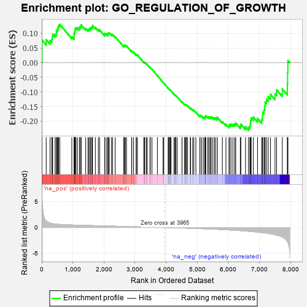
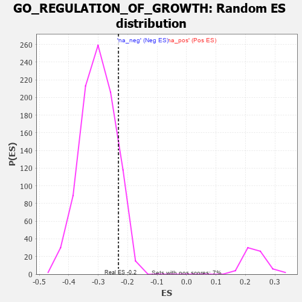

| | | Dataset | 7d |
| Phenotype | NoPhenotypeAvailable |
| Upregulated in class | na_neg |
| GeneSet | GO_REGULATION_OF_GROWTH |
| Enrichment Score (ES) | -0.23128906 |
| Normalized Enrichment Score (NES) | -0.77139074 |
| Nominal p-value | 0.88412017 |
| FDR q-value | 0.99669325 |
| FWER p-Value | 1.0 |
Table: GSEA Results Summary

Fig 1: Enrichment plot: GO_REGULATION_OF_GROWTH
Profile of the Running ES Score & Positions of GeneSet Members on the Rank Ordered List
| PROBE | GENE SYMBOL | GENE_TITLE | RANK IN GENE LIST | RANK METRIC SCORE | RUNNING ES | CORE ENRICHMENT | | 1 | SYT2 | | | 8 | 5.577 | 0.0773 | No |
| 2 | TKT | | | 143 | 1.309 | 0.0785 | No |
| 3 | TBX20 | | | 267 | 0.880 | 0.0752 | No |
| 4 | ARX | | | 322 | 0.782 | 0.0792 | No |
| 5 | DLL1 | | | 337 | 0.760 | 0.0881 | No |
| 6 | GSK3A | | | 351 | 0.745 | 0.0969 | No |
| 7 | CCNB2 | | | 429 | 0.672 | 0.0965 | No |
| 8 | WRN | | | 469 | 0.649 | 0.1006 | No |
| 9 | LRP1 | | | 470 | 0.648 | 0.1097 | No |
| 10 | MYOD1 | | | 504 | 0.628 | 0.1143 | No |
| 11 | HTRA2 | | | 527 | 0.621 | 0.1202 | No |
| 12 | SRF | | | 542 | 0.615 | 0.1271 | No |
| 13 | CCNB1 | | | 581 | 0.601 | 0.1307 | No |
| 14 | ZPR1 | | | 967 | 0.491 | 0.0884 | No |
| 15 | ING3 | | | 1039 | 0.476 | 0.0860 | No |
| 16 | AKT1 | | | 1040 | 0.476 | 0.0927 | No |
| 17 | YAP1 | | | 1041 | 0.475 | 0.0993 | No |
| 18 | MEF2C | | | 1054 | 0.473 | 0.1044 | No |
| 19 | NDRG3 | | | 1068 | 0.470 | 0.1094 | No |
| 20 | RAI1 | | | 1071 | 0.469 | 0.1157 | No |
| 21 | BRD8 | | | 1101 | 0.463 | 0.1185 | No |
| 22 | VPS54 | | | 1148 | 0.454 | 0.1190 | No |
| 23 | KCTD6 | | | 1213 | 0.444 | 0.1171 | No |
| 24 | RBBP7 | | | 1220 | 0.443 | 0.1225 | No |
| 25 | WDR36 | | | 1260 | 0.437 | 0.1237 | No |
| 26 | CDC73 | | | 1265 | 0.436 | 0.1293 | No |
| 27 | CARM1 | | | 1413 | 0.408 | 0.1162 | No |
| 28 | IFRD1 | | | 1486 | 0.392 | 0.1125 | No |
| 29 | OGFR | | | 1517 | 0.388 | 0.1141 | No |
| 30 | DCAF1 | | | 1559 | 0.381 | 0.1143 | No |
| 31 | SOCS6 | | | 1560 | 0.381 | 0.1196 | No |
| 32 | RNF6 | | | 1605 | 0.373 | 0.1192 | No |
| 33 | CDK4 | | | 1626 | 0.370 | 0.1219 | No |
| 34 | DERL2 | | | 1632 | 0.368 | 0.1264 | No |
| 35 | MEIS1 | | | 1723 | 0.351 | 0.1198 | No |
| 36 | SGPL1 | | | 1820 | 0.334 | 0.1122 | No |
| 37 | SMAD4 | | | 1860 | 0.326 | 0.1118 | No |
| 38 | CHPT1 | | | 2023 | 0.302 | 0.0954 | No |
| 39 | DMAP1 | | | 2025 | 0.301 | 0.0995 | No |
| 40 | DDX49 | | | 2073 | 0.295 | 0.0976 | No |
| 41 | INO80 | | | 2120 | 0.288 | 0.0958 | No |
| 42 | ISLR2 | | | 2124 | 0.287 | 0.0994 | No |
| 43 | JADE1 | | | 2141 | 0.286 | 0.1014 | No |
| 44 | DDR1 | | | 2176 | 0.280 | 0.1010 | No |
| 45 | CREB1 | | | 2243 | 0.269 | 0.0963 | No |
| 46 | EAF2 | | | 2278 | 0.263 | 0.0957 | No |
| 47 | SIN3A | | | 2361 | 0.251 | 0.0887 | No |
| 48 | ATRN | | | 2640 | 0.207 | 0.0561 | No |
| 49 | KAT5 | | | 2644 | 0.206 | 0.0586 | No |
| 50 | EPC1 | | | 2663 | 0.204 | 0.0592 | No |
| 51 | DSCAM | | | 2689 | 0.200 | 0.0588 | No |
| 52 | SLIT2 | | | 2724 | 0.195 | 0.0572 | No |
| 53 | MTM1 | | | 2893 | 0.168 | 0.0381 | No |
| 54 | FGFR2 | | | 2895 | 0.167 | 0.0403 | No |
| 55 | SOCS4 | | | 2953 | 0.157 | 0.0352 | No |
| 56 | OPA3 | | | 3035 | 0.145 | 0.0269 | No |
| 57 | LEF1 | | | 3037 | 0.144 | 0.0288 | No |
| 58 | MAP2 | | | 3074 | 0.140 | 0.0262 | No |
| 59 | CTDP1 | | | 3279 | 0.109 | 0.0017 | No |
| 60 | SMAD3 | | | 3303 | 0.105 | 0.0002 | No |
| 61 | PARP2 | | | 3316 | 0.103 | 0.0001 | No |
| 62 | SMAD7 | | | 3369 | 0.093 | -0.0052 | No |
| 63 | DDX3X | | | 3388 | 0.091 | -0.0062 | No |
| 64 | CDK5 | | | 3480 | 0.080 | -0.0167 | No |
| 65 | GLI1 | | | 3489 | 0.079 | -0.0167 | No |
| 66 | PIN1 | | | 3543 | 0.069 | -0.0225 | No |
| 67 | HSF1 | | | 3718 | 0.039 | -0.0441 | No |
| 68 | NIPBL | | | 3900 | 0.010 | -0.0671 | No |
| 69 | NRG3 | | | 3925 | 0.005 | -0.0701 | No |
| 70 | SFRP2 | | | 4065 | -0.018 | -0.0876 | No |
| 71 | CSF1 | | | 4074 | -0.019 | -0.0884 | No |
| 72 | WNT2 | | | 4084 | -0.021 | -0.0892 | No |
| 73 | MTOR | | | 4114 | -0.025 | -0.0926 | No |
| 74 | ABL1 | | | 4125 | -0.027 | -0.0935 | No |
| 75 | PLCE1 | | | 4127 | -0.028 | -0.0932 | No |
| 76 | HNF4A | | | 4157 | -0.034 | -0.0964 | No |
| 77 | RPTOR | | | 4252 | -0.050 | -0.1077 | No |
| 78 | WNT11 | | | 4282 | -0.056 | -0.1106 | No |
| 79 | TBX2 | | | 4303 | -0.060 | -0.1124 | No |
| 80 | SYT17 | | | 4310 | -0.061 | -0.1123 | No |
| 81 | ADRB2 | | | 4352 | -0.068 | -0.1165 | No |
| 82 | SOCS7 | | | 4509 | -0.096 | -0.1351 | No |
| 83 | ILK | | | 4510 | -0.096 | -0.1338 | No |
| 84 | SYT4 | | | 4590 | -0.116 | -0.1422 | No |
| 85 | RAB21 | | | 4620 | -0.122 | -0.1442 | No |
| 86 | LMX1A | | | 4631 | -0.124 | -0.1438 | No |
| 87 | FGFR3 | | | 4656 | -0.129 | -0.1450 | No |
| 88 | LIMK1 | | | 4684 | -0.136 | -0.1466 | No |
| 89 | PIM1 | | | 4776 | -0.152 | -0.1561 | No |
| 90 | RTN4 | | | 4783 | -0.154 | -0.1547 | No |
| 91 | SGK1 | | | 4852 | -0.168 | -0.1610 | No |
| 92 | SLIT3 | | | 4890 | -0.175 | -0.1633 | No |
| 93 | PRKDC | | | 4955 | -0.189 | -0.1688 | No |
| 94 | ING4 | | | 5084 | -0.221 | -0.1820 | No |
| 95 | DRD2 | | | 5088 | -0.221 | -0.1793 | No |
| 96 | FLCN | | | 5140 | -0.235 | -0.1825 | No |
| 97 | SMO | | | 5195 | -0.247 | -0.1859 | No |
| 98 | TNKS2 | | | 5239 | -0.254 | -0.1879 | No |
| 99 | PTEN | | | 5262 | -0.261 | -0.1870 | No |
| 100 | CDK1 | | | 5264 | -0.262 | -0.1835 | No |
| 101 | RIMS2 | | | 5272 | -0.265 | -0.1806 | No |
| 102 | SGK3 | | | 5338 | -0.282 | -0.1850 | No |
| 103 | CPNE9 | | | 5374 | -0.289 | -0.1854 | No |
| 104 | LATS1 | | | 5412 | -0.298 | -0.1859 | No |
| 105 | IST1 | | | 5442 | -0.305 | -0.1854 | No |
| 106 | ACTN3 | | | 5486 | -0.315 | -0.1864 | No |
| 107 | FGFR1 | | | 5543 | -0.332 | -0.1889 | No |
| 108 | SPHK1 | | | 5576 | -0.339 | -0.1883 | No |
| 109 | G6PD | | | 5638 | -0.358 | -0.1910 | No |
| 110 | LRP12 | | | 5639 | -0.358 | -0.1860 | No |
| 111 | BBS4 | | | 5806 | -0.407 | -0.2015 | No |
| 112 | STK11 | | | 5922 | -0.443 | -0.2100 | No |
| 113 | TLL2 | | | 6020 | -0.478 | -0.2156 | No |
| 114 | PPT1 | | | 6038 | -0.485 | -0.2110 | No |
| 115 | DBNL | | | 6084 | -0.501 | -0.2097 | No |
| 116 | STK4 | | | 6145 | -0.518 | -0.2101 | No |
| 117 | INSR | | | 6204 | -0.538 | -0.2100 | No |
| 118 | CDC42 | | | 6236 | -0.548 | -0.2062 | No |
| 119 | BBS2 | | | 6383 | -0.608 | -0.2164 | No |
| 120 | CDKL3 | | | 6401 | -0.618 | -0.2099 | No |
| 121 | RERG | | | 6551 | -0.684 | -0.2193 | No |
| 122 | PTPRS | | | 6646 | -0.738 | -0.2209 | Yes |
| 123 | PAK1 | | | 6691 | -0.757 | -0.2159 | Yes |
| 124 | EGFR | | | 6708 | -0.765 | -0.2072 | Yes |
| 125 | GSK3B | | | 6719 | -0.768 | -0.1977 | Yes |
| 126 | NPY1R | | | 6732 | -0.776 | -0.1884 | Yes |
| 127 | NET1 | | | 6803 | -0.816 | -0.1859 | Yes |
| 128 | GHSR | | | 6937 | -0.894 | -0.1903 | Yes |
| 129 | CPNE5 | | | 7070 | -0.977 | -0.1934 | Yes |
| 130 | CSH1 | | | 7098 | -0.995 | -0.1829 | Yes |
| 131 | RYK | | | 7102 | -1.000 | -0.1693 | Yes |
| 132 | SYT1 | | | 7148 | -1.033 | -0.1605 | Yes |
| 133 | AR | | | 7169 | -1.046 | -0.1484 | Yes |
| 134 | PTPRJ | | | 7180 | -1.054 | -0.1349 | Yes |
| 135 | TCHP | | | 7224 | -1.099 | -0.1249 | Yes |
| 136 | CIB1 | | | 7280 | -1.152 | -0.1158 | Yes |
| 137 | PLAC8 | | | 7355 | -1.223 | -0.1081 | Yes |
| 138 | PPIB | | | 7499 | -1.396 | -0.1067 | Yes |
| 139 | DCC | | | 7550 | -1.470 | -0.0925 | Yes |
| 140 | PLS1 | | | 7734 | -1.855 | -0.0898 | Yes |
| 141 | CAV3 | | | 7896 | -2.739 | -0.0719 | Yes |
| 142 | PLCB1 | | | 7904 | -2.841 | -0.0329 | Yes |
| 143 | PI16 | | | 7914 | -2.948 | 0.0073 | Yes |
Table: GSEA details [plain text format]

Fig 2: GO_REGULATION_OF_GROWTH: Random ES distribution
Gene set null distribution of ES for GO_REGULATION_OF_GROWTH